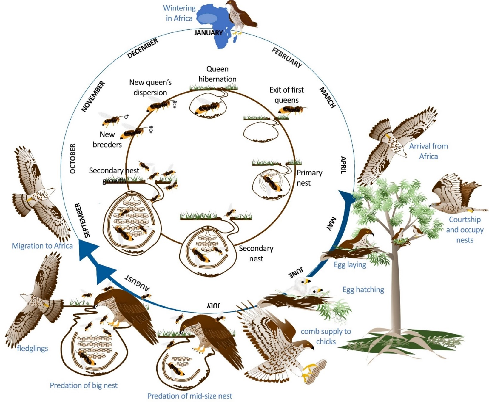
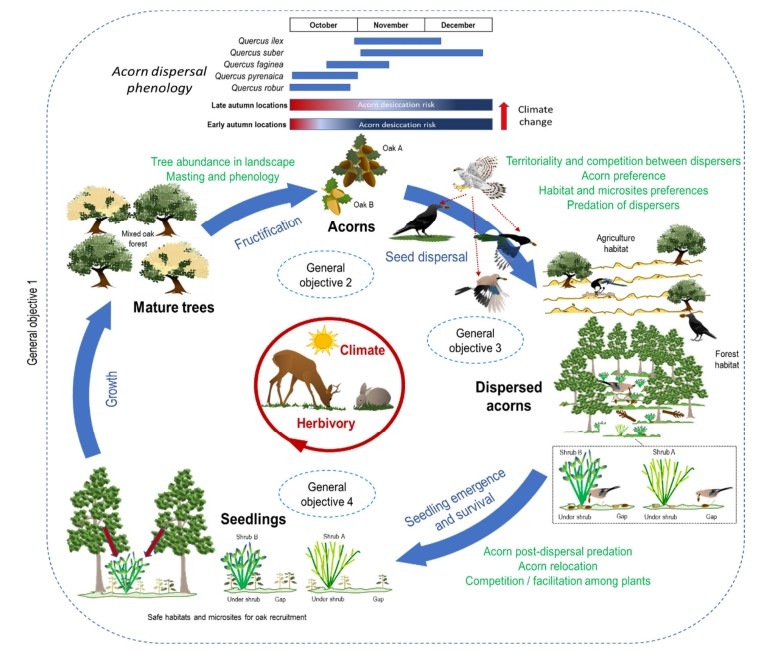
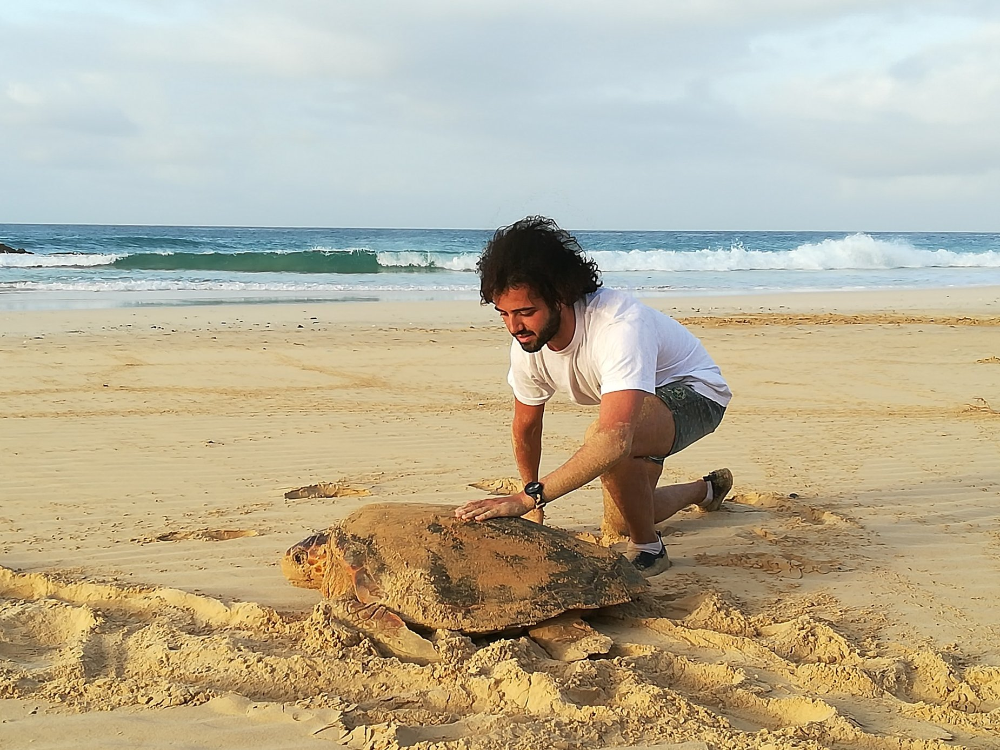

Research & Fieldwork
ECOLOGY & CONSERVATION
Research &
Research &
Fieldwork.
EXPLORE THE WORK
From the roles of birds in ecosystems to woodland regeneration and hands-on wildlife conservation, discover the questions and field experiences that have shaped my work.
THREE PROJECTS ONE SHARED CURIOSITYSelected projects
01 — 03
01
RESEARCH · AVIAN ECOLOGY
EVALUAVE
Assessing the functions of birds and the ecosystem services they provide in agroforestry systems.
Explore project
02
RESEARCH · FOREST ECOLOGY
QueVADIS
Exploring how acorn traits, seed dispersal and facilitation influence the colonisation of coexisting oak species.
Explore project
03
FIELDWORK · CONSERVATION · 2018
BIOS Cabo Verde
Four weeks of conservation volunteering: turtle monitoring, nest protection, hatchling measurements and data work on Boa Vista.
Explore photo journal